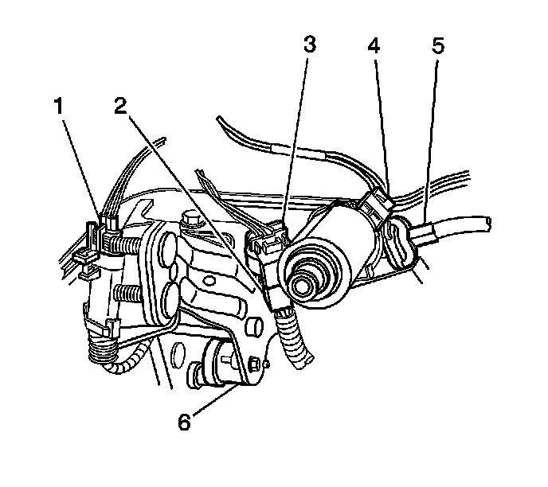

Accelerator Control Cable Replacement
Accelerator Control Cable Replacement
Removal Procedure

1. Remove the adjustable accelerator pedal assembly from the vehicle. Refer to Accelerator Pedal Assembly Replacement (LHD) (Accelerator Pedal Assembly Replacement (LHD))Accelerator Pedal Assembly Replacement (RHD) (Accelerator Pedal Assembly Replacement (RHD)) .
2. Carefully squeeze the collar of the accelerator pedal cable in order to release the cable from the motor.
3. Remove the accelerator cable from the vehicle.
Installation Procedure

1. Install the accelerator pedal cable (5) to the motor.
Important: Ensure that the adjustable accelerator pedal and adjustable brake pedal are synchronized in the full forward, front of vehicle position.
Important: During the synchronization procedure, do not exceed 0.5N.m (4.43 lb in) of torque while adjusting the pedals with the use of the cable, or the square drive.
2. Synchronize the pedals to the full forward position.
3. Synchronize the brake pedal to the full forward position. Use the instrument panel switch, the Tech II, or manually move the brake pedal as follows:
1. Use an adjustable wrench on the accelerator pedal end of the accelerator pedal cable.
2. Slowly rotate the accelerator cable to move the brake pedal to the full forward, front of vehicle position.
3. Remove the wrench from the vehicle.
4. Synchronize the accelerator pedal to the full forward position. Proceed as follows before pedal installation:
1. Install a square drive tool into the accelerator pedal where the cable attaches.
2. Carefully rotate the tool to move the adjustable pedal to the full forward position.
3. Remove the square drive tool.
5. Connect the adjustable accelerator pedal cable to the pedal assembly.
6. Ensure that the adjustable accelerator pedal cable retaining feature is locked in place by carefully pulling on the cable.
7. Continue the installation procedure for the accelerator pedal assembly. Refer to Accelerator Pedal Assembly Replacement (LHD) (Accelerator Pedal Assembly Replacement (LHD))Accelerator Pedal Assembly Replacement (RHD) (Accelerator Pedal Assembly Replacement (RHD)) .
8. Perform the adjustable pedal calibration procedure. Refer to Adjustable Pedal System Calibration (Programming and Relearning) .